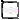

| Name | Description |
|---|---|
| Regular | |
|  Out | |
| Stopwatch | |
 Modelica_StateGraph2.Examples.Applications.HarelsWristWatch.WristWatch
Modelica_StateGraph2.Examples.Applications.HarelsWristWatch.WristWatchThis example is a StateGraph2 implementation of David Harel's Wristwatch presented in "Statecharts: A Visual Formalism for Complex Systems", see literature.
As an application example, D. Harel used a Citizen Quartz Multi-Alarm III wristwatch as a case study to prove that his new formalism was flexible and powerful enough to describe a behavior that contains numerous modes with only four input signals coming from the buttons of the watch.
The watch display comprises six different displays showing time, 12/24h time setting, AM/PM setting, alarm on/off, chime on/offand stop watch indication. It is operated by four buttons: A, B, C and D. The watch can display time and date (day of month, weekday, date, month, year). It has a chime function, display back-light for improved illumination, low-battery warning, a stop watch with lap/reg mode options and two alarms.
Button A works as a switch between display modes of the watch. The different display modes are: Time (default), alarm1, alarm2, and stopwatch. In each of these, button C will enter update mode where the current time or the alarm time can be set. Inside the update modes, C will flip through different time entities and finally return from update mode. Button B is used to exit update regardless of which internal state being active. In stopwatch mode, button B is used as on/off switch. Additionally, the illumination is turned on every time B is pressed down, and shut off on release. Button D serves as an on/off switch of the current active display mode. If in time mode, pressing button D will result in display of the current date. In stopwatch mode, button D works as a selector between reg/lap display mode.
To run model interactively, enable Realtime in the Experiment setup and set load result interval to 0.01.
Extends from Modelica.Icons.Example (Icon for runnable examples).
model WristWatch
extends Modelica.Icons.Example;
Parallel main(
use_outPort=true,
use_suspend=true,
nExit=1,
nOut=1,
nIn=1,
nEntry=6,
nSuspend=1);
Modelica_StateGraph2.Step dead(
initialStep=true,
nOut=1,
nIn=2,
use_activePort=true);
Modelica_StateGraph2.Transition battery_removed(
use_conditionPort=true);
Parallel alarms_beep(
use_suspend=true,
nEntry=1,
initialStep=false,
use_inPort=true,
nIn=1,
nSuspend=2);
Modelica_StateGraph2.Blocks.Interactive.TrigButton insert_battery(
label=
"Insert Battery");
Modelica_StateGraph2.Blocks.Interactive.TrigButton remove_battery(
label=
"Remove Battery");
Modelica_StateGraph2.Blocks.Interactive.TrigButton kill_battery(
label=
"Kill Battery");
Modelica_StateGraph2.Step alarm1_beeps( nIn=1, use_activePort=true);
Modelica_StateGraph2.Step alarm1_status_disabled( nOut=1, nIn=2);
Modelica_StateGraph2.Step alarm1_status_enabled( nOut=1, nIn=1,
use_activePort=true);
Modelica_StateGraph2.Transition alarm1_disabled_d(
use_conditionPort=true);
Modelica_StateGraph2.Transition alarm1_enabled_d(
use_conditionPort=true, loopCheck=false);
Modelica_StateGraph2.Step alarm2_beeps( nIn=1, use_activePort=true);
Modelica_StateGraph2.Step both_beep( nIn=1, use_activePort=true);
Modelica_StateGraph2.Transition t_hits_t2_p2( use_conditionPort=true);
Modelica_StateGraph2.Transition t_hits_t1_p( use_conditionPort=true);
Modelica_StateGraph2.Step choose_alarm( nIn=1, nOut=3);
Modelica_StateGraph2.Transition p_or_p1_or_p2( use_conditionPort=true);
Modelica_StateGraph2.Transition any_button_pressed(
delayedTransition=false,
loopCheck=false,
condition=edge(A.y) or edge(B.y) or edge(C.y) or edge(D.y));
Modelica_StateGraph2.Transition thirty_secs_in_alarms_beep(
delayedTransition=true, waitTime=30);
Modelica_StateGraph2.Blocks.Interactive.TrigButton weaken_battery(
label=
"Weaken Battery");
Modelica_StateGraph2.Step alarm2_status_disabled( nOut=1, nIn=2);
Modelica_StateGraph2.Step alarm2_status_enabled( nOut=1, nIn=1,
use_activePort=true);
Modelica_StateGraph2.Transition alarm2_disabled_d(
use_conditionPort=true);
Modelica_StateGraph2.Transition alarm2_enabled_d(
use_conditionPort=true, loopCheck=false);
Modelica_StateGraph2.Step light_off( nOut=1, nIn=2,
use_activePort=true);
Modelica_StateGraph2.Step light_on( nOut=1, nIn=1,
use_activePort=true);
Modelica_StateGraph2.Transition light_off_b_down(
use_conditionPort=true);
Modelica_StateGraph2.Transition light_on_b_up(
use_conditionPort=true, loopCheck=false);
Modelica_StateGraph2.Step chime_enabled_quiet( nOut=1, nIn=2);
Modelica_StateGraph2.Step chime_enabled_beep( nOut=1, nIn=1);
Modelica_StateGraph2.Transition chime_enabled_quiet_t_is_whole_hour(
use_conditionPort=true);
Modelica_StateGraph2.Transition two_secs_in_chime_enabled_beeps(
delayedTransition=true,
waitTime=2,
loopCheck=false);
Parallel chime_enabled(
nEntry=1,
nIn=1,
use_suspend=true,
nSuspend=1);
Modelica_StateGraph2.Step chime_disabled( nOut=1, nIn=2);
Modelica_StateGraph2.Transition chime_disabled_d(
use_conditionPort=true,
delayedTransition=false);
Modelica_StateGraph2.Transition chime_enabled_d(
use_conditionPort=true,
delayedTransition=false,
loopCheck=false);
Modelica_StateGraph2.Step power_ok( nOut=1, nIn=1);
Modelica_StateGraph2.Step power_blink( nIn=1, nOut=1);
Modelica_StateGraph2.Transition power_ok_battery_weakens(
use_conditionPort=true, loopCheck=false);
Modelica_StateGraph2.Transition battery_dies( use_conditionPort=true);
Parallel displays(
use_outPort=false,
use_suspend=true,
nSuspend=1,
nResume=2,
initialStep=false,
use_inPort=true,
nIn=1,
nEntry=1);
Regular regular( nOut=1, nIn=4,
nSuspend=1,
nResume=1,
time_setting(y_start=3600*5 + 60*59 + 30),
date_setting(y_start=625),
year_setting(y_start=2009));
Out out(
nIn=1,
nSuspend=1,
nOut=1,
alarm1_setting(y_start=3600*6));
Stopwatch stopwatch(
nResume=1, nSuspend=1,
use_activePort=true);
Modelica_StateGraph2.Transition regular_a( use_conditionPort=true);
Modelica_StateGraph2.Transition two_min_in_out( delayedTransition=true,
waitTime=120);
Modelica_StateGraph2.Transition out_a( use_conditionPort=true,
loopCheck=false);
Modelica_StateGraph2.Transition stopwatch_a( use_conditionPort=true);
Modelica_StateGraph2.Blocks.Interactive.PressButton C(
label="C");
Modelica_StateGraph2.Blocks.Interactive.PressButton D(
label="D");
Modelica_StateGraph2.Blocks.Interactive.PressButton B(
label="B");
Modelica_StateGraph2.Blocks.Interactive.PressButton A(
label="A");
protected
inner Modelica_StateGraph2.Examples.Applications.HarelsWristWatch.Utilities.SignalBus
signalBus;
public
Modelica_StateGraph2.Transition battery_inserted( use_conditionPort=true,
loopCheck=false);
protected
Modelica_StateGraph2.Examples.Applications.HarelsWristWatch.Utilities.SignalBus
displays_bus_node;
public
Modelica_StateGraph2.Transition t_hits_t1( use_conditionPort=true);
protected
Modelica_StateGraph2.Examples.Applications.HarelsWristWatch.Utilities.SignalBus
top_level_bus_node;
Modelica_StateGraph2.Examples.Applications.HarelsWristWatch.Utilities.SignalBus
main_bus_node;
Modelica_StateGraph2.Examples.Applications.HarelsWristWatch.Utilities.SignalBus
alarms_bus_node;
public
Modelica.Blocks.Logical.And and1;
Modelica.Blocks.Logical.And and2;
Modelica_StateGraph2.Transition regular_time_c(
use_conditionPort=true,
delayedTransition=false);
Modelica_StateGraph2.Step wait( nIn=1, nOut=2);
Modelica_StateGraph2.Transition two_sec_in_wait(
delayedTransition=true,
use_conditionPort=false,
waitTime=2);
Modelica_StateGraph2.Transition wait_c_up_1(
delayedTransition=true,
use_conditionPort=true,
waitTime=0.01);
Modelica.Blocks.Logical.Not not1;
Modelica.Blocks.Logical.And and3;
Modelica.Blocks.Logical.Edge edge1;
Modelica.Blocks.Logical.Pre pre1;
Modelica.Blocks.Logical.Edge edge2;
Modelica.Blocks.Logical.Edge edge3;
Modelica.Blocks.Logical.Not not2;
Modelica.Blocks.Logical.Edge edge4;
Modelica.Blocks.Logical.And and4;
Modelica.Blocks.Logical.And and5;
Modelica.Blocks.Logical.And and6;
Modelica.Blocks.Logical.And and7;
Modelica.Blocks.Logical.Edge edge5;
Utilities.WatchDisplay watchDisplay;
Modelica_StateGraph2.Blocks.MathInteger.MultiSwitch set_illumination(
nu=2,
expr={1,2},
y_default=0,
use_pre_as_default=false);
public
Modelica.Blocks.Logical.Edge edge6;
Utilities.AlarmTrigger alarmTrigger;
Modelica.Blocks.Logical.Edge edge7;
Utilities.WatchController watchController;
Modelica_StateGraph2.Blocks.MathBoolean.ShowValue showValue;
Modelica_StateGraph2.Blocks.MathBoolean.ShowValue showValue1;
Modelica_StateGraph2.Blocks.MathBoolean.ShowValue showValue2;
Modelica_StateGraph2.Blocks.MathBoolean.ShowValue showValue3;
Modelica_StateGraph2.Blocks.MathBoolean.ShowValue showValue4;
protected
Modelica_StateGraph2.Examples.Applications.HarelsWristWatch.Utilities.SignalBus
top_level_bus_node1;
public
Modelica_StateGraph2.Blocks.MathBoolean.Or or1(
nu=2);
public
Modelica_StateGraph2.Blocks.MathBoolean.Or or2(
nu=2);
equation
connect(alarm1_enabled_d.inPort, alarm1_status_enabled.outPort[1]);
connect(alarm1_status_enabled.inPort[1], alarm1_disabled_d.outPort);
connect(alarm1_disabled_d.inPort, alarm1_status_disabled.outPort[1]);
connect(t_hits_t1_p.outPort, both_beep.inPort[1]);
connect(t_hits_t2_p2.outPort, alarm2_beeps.inPort[1]);
connect(alarms_beep.entry[1], choose_alarm.inPort[1]);
connect(alarm2_enabled_d.inPort, alarm2_status_enabled.outPort[1]);
connect(alarm2_status_enabled.inPort[1], alarm2_disabled_d.outPort);
connect(alarm2_disabled_d.inPort, alarm2_status_disabled.outPort[1]);
connect(light_on_b_up.inPort, light_on.outPort[1]);
connect(light_on.inPort[1], light_off_b_down.outPort);
connect(light_off_b_down.inPort, light_off.outPort[1]);
connect(two_secs_in_chime_enabled_beeps.inPort, chime_enabled_beep.outPort[
1]);
connect(chime_enabled_beep.inPort[1], chime_enabled_quiet_t_is_whole_hour.outPort);
connect(chime_enabled_quiet_t_is_whole_hour.inPort, chime_enabled_quiet.outPort[
1]);
connect(chime_enabled.entry[1], chime_enabled_quiet.inPort[1]);
connect(two_secs_in_chime_enabled_beeps.outPort, chime_enabled_quiet.inPort[
2]);
connect(chime_disabled.outPort[1], chime_disabled_d.inPort);
connect(chime_disabled_d.outPort, chime_enabled.inPort[1]);
connect(chime_enabled_d.inPort, chime_enabled.suspend[1]);
connect(chime_enabled_d.outPort, chime_disabled.inPort[1]);
connect(power_blink.inPort[1], power_ok_battery_weakens.outPort);
connect(power_ok_battery_weakens.inPort, power_ok.outPort[1]);
connect(power_blink.outPort[1], main.exit[1]);
connect(battery_dies.inPort, main.outPort[1]);
connect(regular_a.inPort, regular.outPort[1]);
connect(regular_a.outPort, out.inPort[1]);
connect(two_min_in_out.inPort, out.suspend[1]);
connect(out.outPort[1], out_a.inPort);
connect(out_a.outPort, stopwatch.resume[1]);
connect(stopwatch_a.inPort, stopwatch.suspend[1]);
connect(p_or_p1_or_p2.inPort, displays.suspend[1]);
connect(p_or_p1_or_p2.outPort, alarms_beep.inPort[1]);
connect(any_button_pressed.inPort, alarms_beep.suspend[1]);
connect(thirty_secs_in_alarms_beep.inPort, alarms_beep.suspend[2]);
connect(any_button_pressed.outPort, displays.resume[1]);
connect(thirty_secs_in_alarms_beep.outPort, displays.resume[2]);
connect(A.y,signalBus. a);
connect(B.y,signalBus. b);
connect(C.y,signalBus. c);
connect(D.y,signalBus. d);
connect(battery_inserted.outPort, main.inPort[1]);
connect(dead.outPort[1], battery_inserted.inPort);
connect(displays.inPort[1], main.entry[1]);
connect(main.entry[2], alarm1_status_disabled.inPort[1]);
connect(alarm1_enabled_d.outPort, alarm1_status_disabled.inPort[2]);
connect(alarm2_status_disabled.inPort[1], main.entry[3]);
connect(alarm2_enabled_d.outPort, alarm2_status_disabled.inPort[2]);
connect(main.entry[4], chime_disabled.inPort[2]);
connect(main.entry[5], light_off.inPort[1]);
connect(light_on_b_up.outPort, light_off.inPort[2]);
connect(main.entry[6], power_ok.inPort[1]);
connect(stopwatch_a.conditionPort, regular_a.conditionPort);
connect(out_a.conditionPort, stopwatch_a.conditionPort);
connect(two_min_in_out.outPort, regular.inPort[1]);
connect(stopwatch_a.outPort, regular.inPort[2]);
connect(choose_alarm.outPort[1], t_hits_t1_p.inPort);
connect(t_hits_t1.outPort, alarm1_beeps.inPort[1]);
connect(choose_alarm.outPort[2], t_hits_t2_p2.inPort);
connect(choose_alarm.outPort[3], t_hits_t1.inPort);
connect(battery_removed.inPort, main.suspend[1]);
connect(battery_removed.outPort, dead.inPort[2]);
connect(battery_dies.outPort, dead.inPort[1]);
connect(insert_battery.y, signalBus.insert_battery);
connect(remove_battery.y, signalBus.remove_battery);
connect(kill_battery.y, signalBus.kill_battery);
connect(weaken_battery.y, signalBus.weaken_battery);
connect(signalBus, top_level_bus_node);
connect(top_level_bus_node, displays_bus_node);
connect(top_level_bus_node, main_bus_node);
connect(alarms_bus_node, main_bus_node);
connect(light_off_b_down.conditionPort, main_bus_node.b);
connect(power_ok_battery_weakens.conditionPort, main_bus_node.weaken_battery);
connect(battery_inserted.conditionPort, top_level_bus_node.insert_battery);
connect(battery_removed.conditionPort, top_level_bus_node.remove_battery);
connect(chime_enabled_quiet_t_is_whole_hour.conditionPort,
alarms_bus_node.T_is_whole_hour);
connect(chime_disabled_d.conditionPort, and1.y);
connect(and2.y, chime_enabled_d.conditionPort);
connect(and2.u1, main_bus_node.chime_on);
connect(regular_time_c.inPort, regular.suspend[1]);
connect(wait.inPort[1], regular_time_c.outPort);
connect(two_sec_in_wait.outPort, regular.resume[1]);
connect(wait_c_up_1.outPort, regular.inPort[3]);
connect(displays.entry[1], regular.inPort[4]);
connect(wait_c_up_1.inPort, wait.outPort[1]);
connect(two_sec_in_wait.inPort, wait.outPort[2]);
connect(pre1.y, regular_time_c.conditionPort);
connect(and3.y, pre1.u);
connect(edge1.y, and3.u2);
connect(edge1.u, top_level_bus_node.c);
connect(and3.u1, top_level_bus_node.time_active);
connect(not1.u, edge1.u);
connect(not1.y, wait_c_up_1.conditionPort);
connect(and1.u2, main_bus_node.chime_off);
connect(edge2.y, and2.u2);
connect(edge2.u, main_bus_node.d);
connect(edge3.y, and1.u1);
connect(edge3.u, main_bus_node.d);
connect(not2.u, light_off_b_down.conditionPort);
connect(not2.y, light_on_b_up.conditionPort);
connect(edge4.u, alarms_bus_node.d);
connect(edge4.y, and5.u2);
connect(and5.y, alarm2_enabled_d.conditionPort);
connect(and4.y, alarm2_disabled_d.conditionPort);
connect(and7.y, alarm1_disabled_d.conditionPort);
connect(and6.y, alarm1_enabled_d.conditionPort);
connect(and4.u2, edge4.y);
connect(and6.u2, and4.u2);
connect(and7.u2, and6.u2);
connect(and5.u1, alarms_bus_node.alarm2_on);
connect(and4.u1, alarms_bus_node.alarm2_off);
connect(and6.u1, alarms_bus_node.alarm1_on);
connect(and7.u1, alarms_bus_node.alarm1_off);
connect(battery_dies.conditionPort, alarms_bus_node.kill_battery);
connect(edge5.y, regular_a.conditionPort);
connect(edge5.u, displays_bus_node.a);
connect(light_off.activePort, set_illumination.u[1]);
connect(set_illumination.y, watchDisplay.illumination);
connect(alarmTrigger.alarm1_enabled, alarm1_status_enabled.activePort);
connect(alarmTrigger.alarm2_enabled, alarm2_status_enabled.activePort);
connect(alarmTrigger.T1, alarms_bus_node.T1);
connect(alarmTrigger.T2, alarms_bus_node.T2);
connect(edge7.y, p_or_p1_or_p2.conditionPort);
connect(alarmTrigger.T_hits_T1, alarms_bus_node.T_hits_T1);
connect(alarmTrigger.T_hits_T2, alarms_bus_node.T_hits_T2);
connect(t_hits_t1.conditionPort, alarmTrigger.P1);
connect(t_hits_t2_p2.conditionPort, alarmTrigger.P2);
connect(t_hits_t1_p.conditionPort, alarmTrigger.P);
connect(alarmTrigger.alarms_beep, edge7.u);
connect(set_illumination.u[2], light_on.activePort);
connect(stopwatch.activePort, displays_bus_node.stopwatch_mode);
connect(watchController.large_digit1, watchDisplay.large_digit1);
connect(watchController.large_digit2, watchDisplay.large_digit2);
connect(watchController.large_digit3, watchDisplay.large_digit3);
connect(watchController.large_digit4, watchDisplay.large_digit4);
connect(watchController.small_digit, watchDisplay.small_digit);
connect(watchController.text_digit, watchDisplay.text_digit);
connect(dead.activePort, edge6.u);
connect(edge6.y, top_level_bus_node.dead_active);
connect(watchController.display_node, top_level_bus_node);
connect(alarm1_beeps.activePort, displays_bus_node.alarm1_beeps);
connect(alarm2_beeps.activePort, displays_bus_node.alarm2_beeps);
connect(both_beep.activePort, displays_bus_node.both_beep);
connect(top_level_bus_node1, top_level_bus_node);
connect(or1.y, showValue4.activePort);
connect(or1.u[1], top_level_bus_node1.alarm2_beeps);
connect(or1.u[2], top_level_bus_node1.both_beep);
connect(or2.y, showValue3.activePort);
connect(or2.u[1], top_level_bus_node1.alarm1_beeps);
connect(or2.u[2], top_level_bus_node1.both_beep);
connect(showValue2.activePort, top_level_bus_node1.chime_on);
connect(alarm2_status_enabled.activePort, alarms_bus_node.alarm2_enabled);
connect(alarm1_status_enabled.activePort, alarms_bus_node.alarm1_enabled);
connect(showValue.activePort, top_level_bus_node1.alarm1_enabled);
connect(showValue1.activePort, top_level_bus_node1.alarm2_enabled);
end WristWatch;
| Type | Name | Default | Description |
|---|---|---|---|
| Boolean | initialStep | false | =true, if initial step (start state machine at entry ports of Parallel) |
| Boolean | use_inPort | true | =true, if inPort enabled |
| Boolean | use_outPort | true | =true, if outPort enabled |
| Boolean | use_suspend | true | =true, if suspend and resume ports enabled |
| Boolean | use_activePort | false | =true, if activePort enabled |
| Type | Name | Description |
|---|---|---|
| Step_in | inPort[nIn] | If enabled, port for one or more input transitions |
| Step_out | outPort[nOut] | If enabled, port for one or more output transitions |
| Composite_resume | resume[nResume] | If enabled, port for zero, one or more resume transitions |
| Composite_suspend | suspend[nSuspend] | If enabled, port for zero, one or more suspend transitions |
| output BooleanOutput | activePort | = true if Parallel component is active, otherwise it is not active |
model Regular extends Modelica_StateGraph2.PartialParallel( nEntry=2,nExit=1);Modelica_StateGraph2.Step time_( initialStep=false, nIn=6, use_activePort=true, nOut=3); Parallel update( use_outPort=true, nExit=1, nEntry=1, nResume=1, use_suspend=true, nOut=1, nSuspend=3, nIn=1, use_activePort=true); Modelica_StateGraph2.Transition time_c_down( delayedTransition=false, use_conditionPort=true, loopCheck=false); Modelica_StateGraph2.Transition mode_c( delayedTransition=false, use_conditionPort=true); Modelica_StateGraph2.Step second( nOut=1, nIn=1, use_activePort=true); Modelica_StateGraph2.Step minute( nIn=1, nOut=1, use_activePort=true); Modelica_StateGraph2.Step ten_minutes( nIn=1, nOut=1, use_activePort=true); Modelica_StateGraph2.Transition second_c( use_conditionPort=true, loopCheck=false); Modelica_StateGraph2.Transition minute_c( use_conditionPort=true); Modelica_StateGraph2.Transition ten_minutes_c( use_conditionPort=true); Modelica_StateGraph2.Step hour( nOut=1, use_activePort=true, nIn=1); Modelica_StateGraph2.Step month( nIn=1, use_activePort=true, nOut=1); Modelica_StateGraph2.Transition hour_c( use_conditionPort=true); Modelica_StateGraph2.Transition month_c( use_conditionPort=true); Modelica_StateGraph2.Transition date_c( use_conditionPort=true); Modelica_StateGraph2.Step day( nOut=1, use_activePort=true, nIn=1); Modelica_StateGraph2.Step year( nIn=1, nOut=1, use_activePort=true); Modelica_StateGraph2.Step mode( nIn=1, nOut=1, use_activePort=true); Modelica_StateGraph2.Transition day_c( use_conditionPort=true); Modelica_StateGraph2.Transition year_c( use_conditionPort=true); Modelica_StateGraph2.Blocks.MathInteger.MultiSwitch time_quantity( nu=4, use_pre_as_default=false, expr={1,60,60*10,60*60}); Modelica_StateGraph2.Transition perform_increment( use_firePort=true, use_conditionPort=true, loopCheck=false); Modelica_StateGraph2.Step date( nOut=1, nIn=1, use_activePort=true); Modelica_StateGraph2.Transition two_min_in_update( use_conditionPort=false, delayedTransition=true, waitTime=120); Modelica_StateGraph2.Step IO( nIn=2, nOut=2); Modelica_StateGraph2.Step OO( nOut=2, nIn=3); Modelica_StateGraph2.Transition OO_b_down( use_conditionPort=true); Modelica_StateGraph2.Transition OO_d_down( use_conditionPort=true); Modelica_StateGraph2.Step OI( nIn=2, nOut=2); Modelica_StateGraph2.Step beep( nOut=2, nIn=2); Modelica_StateGraph2.Transition IO_d_down( use_conditionPort=true); Modelica_StateGraph2.Transition OI_b_down( use_conditionPort=true); Modelica_StateGraph2.Transition beep_d_up( delayedTransition=true, waitTime=0.5, use_conditionPort=true); Modelica_StateGraph2.Transition beep_b_up( delayedTransition=true, waitTime=0.5, use_conditionPort=true); Modelica_StateGraph2.Transition IO_b_up( delayedTransition=true, waitTime=0.5, use_conditionPort=true); Modelica_StateGraph2.Transition OI_d_up( delayedTransition=true, waitTime=0.5, use_conditionPort=true); Modelica_StateGraph2.Step date_( nOut=2, nIn=1, use_activePort=true); Modelica_StateGraph2.Transition time_d_b_up( use_conditionPort=true, loopCheck=false); Modelica_StateGraph2.Transition two_min_in_date( delayedTransition=true, waitTime=120); Modelica_StateGraph2.Transition date_d( use_conditionPort=true); protected outer Modelica_StateGraph2.Examples.Applications.HarelsWristWatch.Utilities.SignalBus signalBus; public Modelica.Blocks.Logical.And and1; Modelica.Blocks.Logical.Edge edge1; Modelica.Blocks.Logical.Not not1; Modelica.Blocks.Logical.Not not2; Modelica.Blocks.Logical.Not not3; protected Modelica_StateGraph2.Examples.Applications.HarelsWristWatch.Utilities.SignalBus bus_node1; Modelica_StateGraph2.Examples.Applications.HarelsWristWatch.Utilities.SignalBus bus_node2; public Modelica.Blocks.Logical.Not not4; Modelica.Blocks.Logical.Not not5; Modelica_StateGraph2.Transition T2( use_conditionPort=true); Modelica.Blocks.Logical.Edge pre1; Modelica_StateGraph2.Blocks.MathInteger.TriggeredAdd time_setting( use_reset=true); Modelica_StateGraph2.Blocks.MathBoolean.Or show_time( nu=5); Modelica_StateGraph2.Blocks.MathBoolean.Or show_date( nu=3); Modelica_StateGraph2.Blocks.MathInteger.MultiSwitch date_quantity( nu=2, use_pre_as_default=false, expr={100,1}); Modelica_StateGraph2.Blocks.MathInteger.TriggeredAdd date_setting( use_reset=true); Modelica_StateGraph2.Blocks.MathInteger.MultiSwitch mode_quantity( nu=1, use_pre_as_default=false, expr={1}); Modelica_StateGraph2.Blocks.MathInteger.TriggeredAdd mode_setting( use_reset=true); Modelica_StateGraph2.Blocks.MathInteger.MultiSwitch year_quantity( nu=1, use_pre_as_default=false, expr={1}); Modelica_StateGraph2.Blocks.MathInteger.TriggeredAdd year_setting( use_reset=true); Modelica_StateGraph2.Blocks.MathInteger.MultiSwitch day_quantity( nu=1, use_pre_as_default=false, expr={1}); Modelica_StateGraph2.Blocks.MathInteger.TriggeredAdd day_setting( use_reset= true); protected Modelica_StateGraph2.Examples.Applications.HarelsWristWatch.Utilities.SignalBus bus_node3; public Modelica.Blocks.Logical.Edge pre2; Modelica.Blocks.Logical.Edge edge2; equationconnect(second_c.inPort,second. outPort[1]); connect(second_c.outPort,minute. inPort[1]); connect(minute_c.inPort,minute. outPort[1]); connect(minute_c.outPort,ten_minutes. inPort[1]); connect(ten_minutes_c.inPort,ten_minutes. outPort[1]); connect(hour_c.inPort,hour. outPort[1]); connect(hour_c.outPort,month. inPort[1]); connect(day_c.outPort,year. inPort[1]); connect(year_c.inPort,year. outPort[1]); connect(year_c.outPort,mode. inPort[1]); connect(date_c.inPort,date. outPort[1]); connect(update.entry[1],second. inPort[1]); connect(day_c.inPort,day. outPort[1]); connect(update.resume[1],perform_increment. outPort); connect(mode.outPort[1],update. exit[1]); connect(two_min_in_update.outPort, time_.inPort[1]); connect(mode_c.outPort,time_. inPort[2]); connect(OO.outPort[1],OO_b_down. inPort); connect(beep_d_up.inPort,beep. outPort[1]); connect(beep_d_up.outPort,IO. inPort[1]); connect(OO_b_down.outPort,IO. inPort[2]); connect(OO_d_down.outPort,OI. inPort[1]); connect(IO.outPort[1],IO_b_up. inPort); connect(IO.outPort[2],IO_d_down. inPort); connect(two_min_in_date.outPort,time_. inPort[3]); connect(IO_d_down.outPort,beep. inPort[1]); connect(OI_b_down.outPort,beep. inPort[2]); connect(beep_b_up.inPort,beep. outPort[2]); connect(beep_b_up.outPort,OI. inPort[2]); connect(OI.outPort[1],OI_b_down. inPort); connect(OI_d_up.inPort,OI. outPort[2]); connect(OO.outPort[2],OO_d_down. inPort); connect(mode_c.inPort,update. outPort[1]); connect(month.outPort[1],month_c. inPort); connect(month_c.outPort,date. inPort[1]); connect(date_c.outPort,day. inPort[1]); connect(ten_minutes_c.outPort,hour. inPort[1]); connect(second.activePort, time_quantity.u[1]); connect(minute.activePort, time_quantity.u[2]); connect(ten_minutes.activePort, time_quantity.u[3]); connect(hour.activePort, time_quantity.u[4]); connect(IO_b_up.outPort,OO. inPort[1]); connect(entry[2],OO. inPort[2]); connect(OI_d_up.outPort,OO. inPort[3]); connect(date_.outPort[1],date_d. inPort); connect(time_d_b_up.outPort,date_. inPort[1]); connect(date_.outPort[2],two_min_in_date. inPort); connect(entry[1], time_.inPort[4]); connect(ten_minutes_c.conditionPort, minute_c.conditionPort); connect(minute_c.conditionPort, second_c.conditionPort); connect(second_c.conditionPort, hour_c.conditionPort); connect(hour_c.conditionPort, month_c.conditionPort); connect(month_c.conditionPort, date_c.conditionPort); connect(hour_c.conditionPort, day_c.conditionPort); connect(day_c.conditionPort, year_c.conditionPort); connect(mode_c.conditionPort, year_c.conditionPort); connect(and1.y, time_d_b_up.conditionPort); connect(not1.y, and1.u1); connect(not2.u, signalBus.b); connect(not2.y, beep_b_up.conditionPort); connect(not2.u, OI_b_down.conditionPort); connect(not3.y, beep_d_up.conditionPort); connect(not3.u, IO_d_down.conditionPort); connect(not3.u, signalBus.d); connect(signalBus, bus_node2); connect(not4.u, bus_node1.b); connect(not4.y, IO_b_up.conditionPort); connect(OO_b_down.conditionPort, not4.u); connect(not5.u, bus_node1.d); connect(not5.y, OI_d_up.conditionPort); connect(OO_d_down.conditionPort, not5.u); connect(T2.inPort, update.suspend[1]); connect(two_min_in_update.inPort, update.suspend[2]); connect(perform_increment.inPort, update.suspend[3]); connect(T2.conditionPort, bus_node2.b); connect(T2.outPort, time_.inPort[5]); connect(not4.u, not1.u); connect(time_.activePort, bus_node1.time_active); connect(pre1.u, bus_node2.c); connect(pre1.y, ten_minutes_c.conditionPort); connect(time_setting.u, time_quantity.y); connect(time_setting.trigger, perform_increment.firePort); connect(time_setting.y, signalBus.update_time); connect(second.activePort, show_time.u[1]); connect(minute.activePort, show_time.u[2]); connect(ten_minutes.activePort, show_time.u[3]); connect(hour.activePort, show_time.u[4]); connect(month.activePort, show_date.u[1]); connect(date.activePort, show_date.u[2]); connect(day.activePort, show_date.u[3]); connect(show_date.y, signalBus.show_date); connect(show_time.y, signalBus.show_time); connect(year.activePort, signalBus.show_year); connect(mode.activePort, signalBus.mode_active); connect(time_.outPort[1], time_c_down.inPort); connect(edge1.y, and1.u2); connect(date_d.outPort, time_.inPort[6]); connect(date_setting.u, date_quantity.y); connect(mode_setting.u, mode_quantity.y); connect(year_setting.u, year_quantity.y); connect(time_setting.trigger, date_setting.trigger); connect(date_setting.trigger, mode_setting.trigger); connect(mode_setting.trigger, year_setting.trigger); connect(time_c_down.conditionPort, day_c.conditionPort); connect(year_setting.trigger, day_setting.trigger); connect(day.activePort, day_quantity.u[1]); connect(year_quantity.u[1], year.activePort); connect(mode_quantity.u[1], mode.activePort); connect(bus_node3, signalBus); connect(bus_node3, bus_node1); connect(day_setting.y, bus_node3.day_setting); connect(year_setting.y, bus_node3.year_setting); connect(day_quantity.y, day_setting.u); connect(date_setting.y, bus_node3.date_setting); connect(time_c_down.outPort, update.inPort[1]); connect(time_.outPort[2], exit[1]); connect(time_.outPort[3], time_d_b_up.inPort); connect(mode_setting.y, bus_node3.mode_setting); connect(pre2.y, perform_increment.conditionPort); connect(pre2.u, bus_node2.d); connect(update.activePort, bus_node3.update_active); connect(time_setting.reset, bus_node3.dead_active); connect(date_setting.reset, time_setting.reset); connect(date_setting.reset, mode_setting.reset); connect(mode_setting.reset, year_setting.reset); connect(year_setting.reset, day_setting.reset); connect(edge2.u, bus_node1.d); connect(edge2.y, date_d.conditionPort); connect(edge2.y, edge1.u); connect(month.activePort, date_quantity.u[1]); connect(date.activePort, date_quantity.u[2]); connect(date_.activePort, bus_node3.date_active); connect(mode.activePort, show_time.u[5]); end Regular;
| Type | Name | Default | Description |
|---|---|---|---|
| Boolean | initialStep | false | =true, if initial step (start state machine at entry ports of Parallel) |
| Boolean | use_inPort | true | =true, if inPort enabled |
| Boolean | use_outPort | true | =true, if outPort enabled |
| Boolean | use_suspend | true | =true, if suspend and resume ports enabled |
| Boolean | use_activePort | false | =true, if activePort enabled |
| Type | Name | Description |
|---|---|---|
| Step_in | inPort[nIn] | If enabled, port for one or more input transitions |
| Step_out | outPort[nOut] | If enabled, port for one or more output transitions |
| Composite_resume | resume[nResume] | If enabled, port for zero, one or more resume transitions |
| Composite_suspend | suspend[nSuspend] | If enabled, port for zero, one or more suspend transitions |
| output BooleanOutput | activePort | = true if Parallel component is active, otherwise it is not active |
model Out extends Modelica_StateGraph2.PartialParallel( nEntry=1, nExit=1);Parallel chime( nEntry=1, use_suspend=true, nResume=1, use_inPort=false, nSuspend=1, use_activePort=true); Modelica_StateGraph2.Step chime_off( nIn=2, nOut=1, use_activePort=true); Modelica_StateGraph2.Transition chime_off_d( use_conditionPort=true, use_firePort=false); Modelica_StateGraph2.Step chime_on( nIn=1, nOut=1, use_activePort=true); Modelica_StateGraph2.Transition chime_on_d( use_conditionPort=true, use_firePort=false, loopCheck=false); Parallel alarm1( nEntry=1, use_suspend=true, nSuspend=2, nResume=3, use_inPort=false, use_activePort=true); Modelica_StateGraph2.Step alarm1_off( nIn=2, nOut=1, use_activePort=true); Modelica_StateGraph2.Transition alarm1_off_d( use_conditionPort=true, use_firePort=false); Modelica_StateGraph2.Step alarm1_on( nIn=1, nOut=1, initialStep=false, use_activePort=true); Modelica_StateGraph2.Transition alarm1_on_d( use_conditionPort=true, use_firePort=false, loopCheck=false); Parallel update1( use_outPort=true, use_suspend=true, nEntry=1, nExit=1, nIn=1, nSuspend=2, nResume=1, nOut=1, use_activePort=true); Modelica_StateGraph2.Step update1_hour( nIn=1, nOut=1, use_activePort=true); Modelica_StateGraph2.Transition update1_hour_c( use_conditionPort=true); Modelica_StateGraph2.Step update1_ten_min( nIn=1, nOut=1, use_activePort=true); Modelica_StateGraph2.Transition update1_ten_min_c( use_conditionPort=true); Modelica_StateGraph2.Step update1_min( nIn=1, use_activePort=true, nOut=1); Modelica_StateGraph2.Transition update1_d( use_firePort=true, use_conditionPort=true, loopCheck=false); Modelica_StateGraph2.Transition update1_b( use_conditionPort=true, loopCheck=false); Modelica_StateGraph2.Transition update1_c( use_conditionPort=true, loopCheck=false); Parallel alarm2( nEntry=1, use_suspend=true, nSuspend=2, nResume=3, use_inPort=false, use_activePort=true); Modelica_StateGraph2.Step alarm2_off( nIn=2, nOut=1, use_activePort=true); Modelica_StateGraph2.Transition alarm2_off_d( use_conditionPort=true, use_firePort=false); Modelica_StateGraph2.Step alarm2_on( nIn=1, nOut=1, use_activePort=true); Modelica_StateGraph2.Transition alarm2_on_d( use_conditionPort=true, use_firePort=false, loopCheck=false); Parallel update2( use_outPort=true, use_suspend=true, nEntry=1, nExit=1, nIn=1, nSuspend=2, nResume=1, nOut=1, use_activePort=true); Modelica_StateGraph2.Step update2_hour( nIn=1, nOut=1, use_activePort=true); Modelica_StateGraph2.Transition update2_hour_c( use_conditionPort=true); Modelica_StateGraph2.Step update2_ten_min( nIn=1, nOut=1, use_activePort=true); Modelica_StateGraph2.Transition update2_ten_min_c( use_conditionPort=true); Modelica_StateGraph2.Step update2_min( nOut=1, nIn=1, use_activePort=true); Modelica_StateGraph2.Transition update2_d( use_firePort=true, use_conditionPort=true, loopCheck=false); Modelica_StateGraph2.Transition update2_b( use_conditionPort=true, loopCheck=false); Modelica_StateGraph2.Transition update2_c( use_conditionPort=true, loopCheck=false); Modelica_StateGraph2.Transition alarm1_c( use_conditionPort=true); Modelica_StateGraph2.Transition alarm1_a( use_conditionPort=true, loopCheck=false); Modelica_StateGraph2.Transition alarm2_a( use_conditionPort=true, loopCheck=false); Modelica_StateGraph2.Transition alarm2_c( use_conditionPort=true, loopCheck=false); protected outer Modelica_StateGraph2.Examples.Applications.HarelsWristWatch.Utilities.SignalBus signalBus; public Modelica.Blocks.Logical.Edge edge2; Modelica.Blocks.Logical.Edge edge3; Modelica.Blocks.Logical.Edge edge4; Modelica.Blocks.Logical.Edge edge5; Modelica.Blocks.Logical.Edge edge6; protected Modelica_StateGraph2.Examples.Applications.HarelsWristWatch.Utilities.SignalBus update2_bus_node; public Modelica.Blocks.Logical.Edge edge8; protected Modelica_StateGraph2.Examples.Applications.HarelsWristWatch.Utilities.SignalBus alarm2_bus_node; public Modelica.Blocks.Logical.Edge edge9; protected Modelica_StateGraph2.Examples.Applications.HarelsWristWatch.Utilities.SignalBus chime_bus_node; protected Modelica_StateGraph2.Examples.Applications.HarelsWristWatch.Utilities.SignalBus alarm1_bus_node; public Modelica.Blocks.Logical.Edge edge10; Modelica.Blocks.Logical.Edge edge7; protected Modelica_StateGraph2.Examples.Applications.HarelsWristWatch.Utilities.SignalBus alarm1_bus_node1; public Modelica.Blocks.Logical.Edge edge1; Modelica_StateGraph2.Blocks.MathInteger.MultiSwitch quantity2( expr={60*60, 60*10,60}, nu=3, use_pre_as_default=false); Modelica_StateGraph2.Blocks.MathInteger.TriggeredAdd alarm2_setting; Modelica_StateGraph2.Blocks.MathInteger.MultiSwitch quantity1( expr={60*60, 60*10,60}, nu=3, use_pre_as_default=false); Modelica_StateGraph2.Blocks.MathInteger.TriggeredAdd alarm1_setting; Modelica_StateGraph2.Blocks.MathBoolean.Or or1( nu=2); Modelica_StateGraph2.Blocks.MathBoolean.Or or2( nu=2); equationconnect(chime_off.inPort[1],chime. entry[1]); connect(chime_off_d.inPort,chime_off. outPort[1]); connect(chime_on.inPort[1],chime_off_d. outPort); connect(chime_on_d.inPort,chime_on. outPort[1]); connect(chime_on_d.outPort,chime_off. inPort[2]); connect(alarm1_off.inPort[1],alarm1. entry[1]); connect(alarm1_off_d.inPort,alarm1_off. outPort[1]); connect(alarm1_on_d.outPort,alarm1_off. inPort[2]); connect(update1.entry[1],update1_hour. inPort[1]); connect(update1_hour.outPort[1],update1_hour_c. inPort); connect(update1_hour_c.outPort,update1_ten_min. inPort[1]); connect(update1_ten_min_c.outPort,update1_min. inPort[1]); connect(update1_ten_min.outPort[1],update1_ten_min_c. inPort); connect(update1_d.outPort,update1. resume[1]); connect(update1.suspend[1],update1_d. inPort); connect(update1.suspend[2],update1_b. inPort); connect(update1_b.outPort,alarm1. resume[1]); connect(alarm1.resume[2],update1_c. outPort); connect(update1_c.inPort,update1. outPort[1]); connect(alarm2_off.inPort[1],alarm2. entry[1]); connect(alarm2_off_d.inPort,alarm2_off. outPort[1]); connect(alarm2_on.inPort[1],alarm2_off_d. outPort); connect(alarm2_on_d.inPort,alarm2_on. outPort[1]); connect(alarm2_on_d.outPort,alarm2_off. inPort[2]); connect(update2.entry[1],update2_hour. inPort[1]); connect(update2_hour.outPort[1],update2_hour_c. inPort); connect(update2_hour_c.outPort,update2_ten_min. inPort[1]); connect(update2_min.outPort[1], update2.exit[1]); connect(update2_ten_min_c.outPort, update2_min.inPort[1]); connect(update2_ten_min.outPort[1],update2_ten_min_c. inPort); connect(update2_d.outPort,update2. resume[1]); connect(update2.suspend[1],update2_d. inPort); connect(update2.suspend[2],update2_b. inPort); connect(update2_b.outPort,alarm2. resume[1]); connect(alarm2.resume[2],update2_c. outPort); connect(update2_c.inPort,update2. outPort[1]); connect(alarm1.suspend[1],alarm1_c. inPort); connect(alarm1_c.outPort,update1. inPort[1]); connect(alarm1_a.inPort,alarm1. suspend[2]); connect(alarm1_a.outPort,alarm2. resume[3]); connect(alarm2_a.inPort,alarm2. suspend[1]); connect(alarm2_a.outPort,chime. resume[1]); connect(alarm2_c.inPort,alarm2. suspend[2]); connect(alarm2_c.outPort,update2. inPort[1]); connect(alarm1_on.outPort[1],alarm1_on_d. inPort); connect(alarm1_off_d.outPort,alarm1_on. inPort[1]); connect(entry[1], alarm1.resume[3]); connect(chime.suspend[1], exit[1]); connect(chime_off_d.conditionPort, chime_on_d.conditionPort); connect(alarm2_off_d.conditionPort, alarm2_on_d.conditionPort); connect(alarm1_off_d.conditionPort, alarm1_on_d.conditionPort); connect(update2_ten_min_c.conditionPort, update2_hour_c.conditionPort); connect(update1_hour_c.conditionPort, update1_ten_min_c.conditionPort); connect(update2_ten_min_c.conditionPort, update2_c.conditionPort); connect(alarm1_c.conditionPort, alarm2_c.conditionPort); connect(edge2.u, signalBus.c); connect(edge2.y, alarm2_c.conditionPort); connect(edge3.y, alarm1_a.conditionPort); connect(edge4.u, signalBus.a); connect(edge4.y, alarm2_a.conditionPort); connect(edge5.u, signalBus.d); connect(edge5.y, chime_off_d.conditionPort); connect(edge6.u, alarm2_bus_node.d); connect(edge6.y, alarm2_on_d.conditionPort); connect(alarm2_off.activePort, alarm2_bus_node.alarm2_off); connect(alarm2_on.activePort, alarm2_bus_node.alarm2_on); connect(edge6.y, update2_d.conditionPort); connect(edge9.u, alarm2_bus_node.b); connect(update2_b.conditionPort, edge9.y); connect(chime_off.activePort, chime_bus_node.chime_off); connect(chime_on.activePort, chime_bus_node.chime_on); connect(signalBus, chime_bus_node); connect(alarm2_bus_node, chime_bus_node); connect(update2_bus_node, alarm2_bus_node); connect(alarm1_on.activePort, alarm1_bus_node.alarm1_on); connect(alarm1_off.activePort, alarm1_bus_node.alarm1_off); connect(edge10.u, alarm1_bus_node.d); connect(edge10.y, alarm1_on_d.conditionPort); connect(edge10.y, update1_d.conditionPort); connect(edge7.u, alarm1_bus_node.b); connect(edge7.y, update1_b.conditionPort); connect(update2_bus_node, alarm1_bus_node); connect(alarm1_bus_node, alarm1_bus_node1); connect(update1_min.outPort[1], update1.exit[1]); connect(edge3.u, update2_bus_node.a); connect(edge8.u, update2_bus_node.c); connect(edge8.y, update2_ten_min_c.conditionPort); connect(update2_hour.activePort, quantity2.u[1]); connect(update2_ten_min.activePort, quantity2.u[2]); connect(update2_min.activePort, quantity2.u[3]); connect(alarm2_setting.u, quantity2.y); connect(alarm2_setting.trigger, update2_d.firePort); connect(edge1.u, alarm1_bus_node1.c); connect(edge1.y, update1_ten_min_c.conditionPort); connect(update1_c.conditionPort, edge1.y); connect(alarm1_setting.u, quantity1.y); connect(quantity1.u[1], update1_hour.activePort); connect(update1_ten_min.activePort, quantity1.u[2]); connect(update1_min.activePort, quantity1.u[3]); connect(update1_d.firePort, alarm1_setting.trigger); connect(alarm1_setting.y, alarm1_bus_node1.T1); connect(alarm2_setting.y, update2_bus_node.T2); connect(alarm2.activePort, or1.u[1]); connect(update2.activePort, or1.u[2]); connect(or1.y, update2_bus_node.in_alarm2); connect(or2.u[1], alarm1.activePort); connect(update1.activePort, or2.u[2]); connect(or2.y, alarm1_bus_node1.in_alarm1); connect(chime.activePort, chime_bus_node.in_chime); end Out;
| Type | Name | Default | Description |
|---|---|---|---|
| Boolean | initialStep | false | =true, if initial step (start state machine at entry ports of Parallel) |
| Boolean | use_inPort | true | =true, if inPort enabled |
| Boolean | use_outPort | false | =true, if outPort enabled |
| Boolean | use_suspend | true | =true, if suspend and resume ports enabled |
| Boolean | use_activePort | false | =true, if activePort enabled |
| Type | Name | Description |
|---|---|---|
| Step_in | inPort[nIn] | If enabled, port for one or more input transitions |
| Step_out | outPort[nOut] | If enabled, port for one or more output transitions |
| Composite_resume | resume[nResume] | If enabled, port for zero, one or more resume transitions |
| Composite_suspend | suspend[nSuspend] | If enabled, port for zero, one or more suspend transitions |
| output BooleanOutput | activePort | = true if Parallel component is active, otherwise it is not active |
model Stopwatch extends Modelica_StateGraph2.PartialParallel( nEntry=1, use_outPort=false);Parallel displayrun( nIn=1, nEntry=2, use_outPort=true, nExit=2, nOut=1, use_activePort=true); Modelica_StateGraph2.Step reg( nIn=2, use_activePort=true, nOut=2); Modelica_StateGraph2.Step lap( nIn=1, nOut=1, use_activePort=true); Modelica_StateGraph2.Step on( nIn=2, nOut=1, use_activePort=true); Modelica_StateGraph2.Step off( nIn=1, nOut=2); Modelica_StateGraph2.Transition reg_d( use_conditionPort=true, delayedTransition=false); Modelica_StateGraph2.Transition lap_d( use_conditionPort=true, delayedTransition=false, loopCheck=false); Modelica_StateGraph2.Step zero( nOut=1, nIn=2, use_activePort=true); Modelica_StateGraph2.Transition zero_b( use_conditionPort=true, delayedTransition=false); Modelica_StateGraph2.Transition on_b( use_conditionPort=true, delayedTransition=false); Modelica_StateGraph2.Transition off_b( use_conditionPort=true, delayedTransition=false, loopCheck=false); Modelica_StateGraph2.Transition displayrun_d( use_conditionPort= true, delayedTransition=false, loopCheck=false); protected outer Modelica_StateGraph2.Examples.Applications.HarelsWristWatch.Utilities.SignalBus signalBus; public Modelica.Blocks.Logical.Edge edge1; Modelica.Blocks.Logical.Edge edge2; Modelica_StateGraph2.Blocks.MathInteger.TriggeredAdd stopwatch_clock( use_reset=true); Modelica.Blocks.Sources.IntegerConstant unit_second(k=1); Modelica.Blocks.Sources.SampleTrigger time_increment_trigger; Modelica_StateGraph2.Blocks.MathBoolean.And increment_time(nu=2); Blocks.MathInteger.MultiSwitch select_display_of_time_or_lap_time(nu=3, expr={stopwatch_clock.y,stopwatch_lap.y,0}); Blocks.MathInteger.TriggeredAdd stopwatch_lap(use_reset=true, use_set= true); Modelica_StateGraph2.Blocks.MathBoolean.And freeze_time(nu=2); equationconnect(reg.inPort[1],displayrun. entry[1]); connect(zero_b.inPort,zero. outPort[1]); connect(zero_b.outPort,displayrun. inPort[1]); connect(reg_d.outPort,lap. inPort[1]); connect(on.inPort[1],displayrun. entry[2]); connect(on_b.inPort,on. outPort[1]); connect(on_b.outPort,off. inPort[1]); connect(lap_d.inPort,lap. outPort[1]); connect(lap_d.outPort,reg. inPort[2]); connect(off_b.outPort,on. inPort[2]); connect(displayrun_d.inPort, displayrun.outPort[1]); connect(zero.inPort[1], entry[1]); connect(displayrun_d.outPort, zero.inPort[2]); connect(on_b.conditionPort, off_b.conditionPort); connect(lap_d.conditionPort, reg_d.conditionPort); connect(displayrun_d.conditionPort, reg_d.conditionPort); connect(edge1.u, signalBus.b); connect(edge1.y, zero_b.conditionPort); connect(edge2.y, reg_d.conditionPort); connect(edge2.u, signalBus.d); connect(displayrun.activePort, signalBus.show_stopwatch); connect(unit_second.y, stopwatch_clock.u); connect(time_increment_trigger.y, increment_time.u[1]); connect(on.activePort, increment_time.u[2]); connect(increment_time.y, stopwatch_clock.trigger); connect(zero.activePort, stopwatch_clock.reset); connect(freeze_time.u[1], on.activePort); connect(stopwatch_lap.trigger, freeze_time.y); connect(stopwatch_lap.u, stopwatch_clock.u); connect(stopwatch_clock.y, stopwatch_lap.set); connect(reg.activePort, select_display_of_time_or_lap_time.u[1]); connect(lap.activePort, select_display_of_time_or_lap_time.u[2]); connect(select_display_of_time_or_lap_time.y, signalBus.stopwatch_time); connect(reg.outPort[1], displayrun.exit[1]); connect(off.outPort[1], displayrun.exit[2]); connect(off.outPort[2], off_b.inPort); connect(reg.outPort[2], reg_d.inPort); connect(zero_b.conditionPort, on_b.conditionPort); connect(reg.activePort, freeze_time.u[2]); connect(lap.activePort, stopwatch_lap.reset); connect(zero.activePort, select_display_of_time_or_lap_time.u[3]); end Stopwatch;